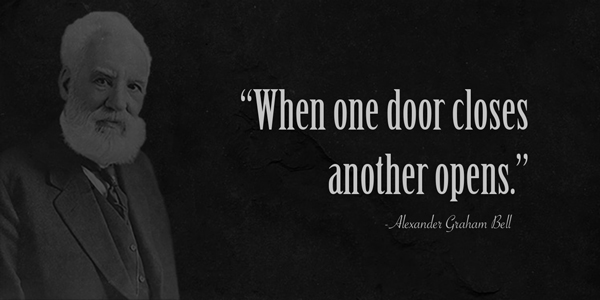

TILLEY DIGITAL STUDIO
Quite a curious series of events led me to where I am today.
My background spans a wide range of experience; describing it as rather unconventional would be an understatement.
My introduction to the realm of digital art began nearly twenty years ago, reproducing simple vector-based logos for a small promotional products company. Later, as co-owner of that same business, graphic design became an integral part of my full-time duties.
This often leaves people a bit baffled, but most of my professional experience is in law enforcement. (Apparently I don't "act like a cop" from what people tell me.) Not altogether surprising from my perspective; when possible (and appropriate) I always did my best to avoid "acting like a cop" while on duty, too.
During an otherwise quiet shift one evening, my law enforcement career came to an abrupt end; I had been a police officer for more than ten years. (Although there is more to the story, the video below provides a general overview of what happened.) Most of us d
Suffice it to say, the "ability to leap tall buildings in a single bound" is no longer part of my skill set, these days.
So there I was, in my early forties, again pondering the question of "what to be when I grow up. Thankfully, the answer came to me while watching local-interest program on PBS one evening.
By pure senendipity, I discovered our local LaunchCode program; before long I was effectively "test-driving" various programming language under the guidance of their mentors. At some point during that process I had an epiphany; front-end development would likely be a perfect fit for me.
For quite some time now, virtually every available moment has been dedicated to charging my course toward a career in web development. Getting to this point has indeed been rather